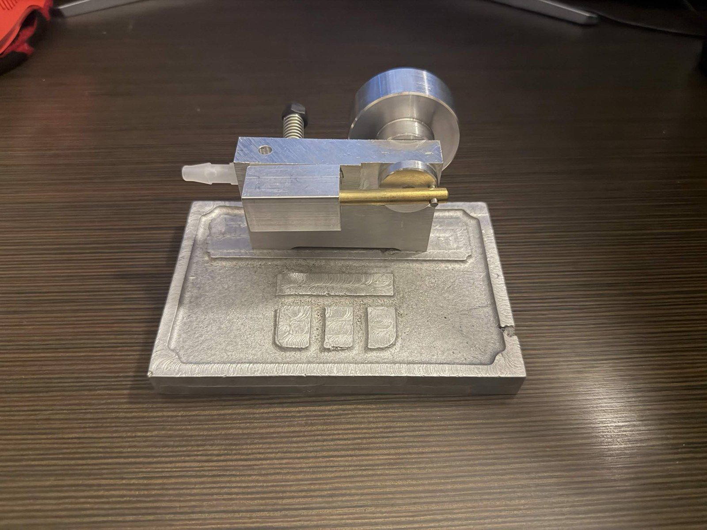
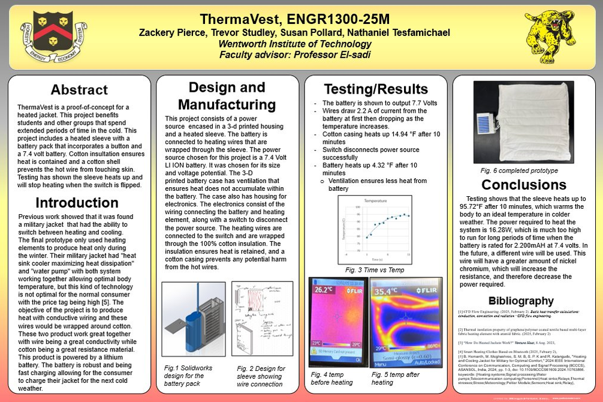

MANUFACTURING LAB · 2026
Wobbler Engine
From a green-sand mold to a finished assembly. A hands-on manufacturing project connecting engineering drawings, manual machining, and metal casting.
Learn more ↗MECHANICAL ENGINEERING · WENTWORTH
I’m a mechanical engineering student who enjoys designing parts and bringing them to life. Take a look at my recent projects below.
Looking for a January–April 2027 co-op

MANUFACTURING LAB · 2026
From a green-sand mold to a finished assembly. A hands-on manufacturing project connecting engineering drawings, manual machining, and metal casting.
Learn more ↗
TEAM PROJECT · 2025
A heated-sleeve prototype built by a four-person team. I led the CAD work on the battery enclosure and supported fabrication, assembly, and thermal measurements.
Learn more ↗MEASURE → MODEL → PRINT → CHECK
A small part.
A practical repair.
PERSONAL PROJECT · 2025
A failed threaded insert became a chance to measure, model, and iterate. Three printed versions led to a replacement that fit the existing frame.
Learn more ↗